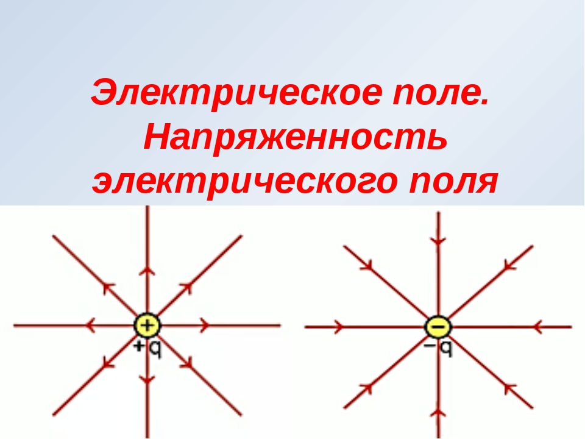

— одна из двух компонент электромагнитного поля, представляющая собой векторное поле, существующее вокруг тел или частиц, обладающих электрическим зарядом, а также возникающее при изменении магнитного поля (например, в электромагнитных волнах).
Для количественного определения электрического поля вводится силовая характеристика — напряжённость электрического поля — векторная физическая величина, равная отношению силы, с которой поле действует на положительный пробный заряд, помещённый в данную точку пространства, к величине этого заряда. Направление вектора напряженности совпадает в каждой точке пространства с направлением силы, действующей на положительный пробный заряд.
Основным действием электрического поля является силовое воздействие на неподвижные относительно наблюдателя электрически заряженные тела или частицы. На движущиеся заряды силовое воздействие оказывает и магнитное поле (вторая составляющая силы Лоренца).

Наблюдение электрического поля в быту
Для того, чтобы создать электрическое поле, необходимо создать электрический заряд. Натрите какой-нибудь диэлектрик о шерсть или что-нибудь подобное, например, пластиковую ручку о собственные чистые волосы. На ручке создастся заряд, а вокруг — электрическое поле. Заряженная ручка будет притягивать к себе мелкие обрывки бумаги. Если натирать о шерсть предмет большей ширины, например, резиновую ленту, то в темноте можно будет видеть мелкие искры, возникающие вследствие электрических разрядов.
Электрическое поле часто возникает возле телевизионного экрана (относится к телевизорам с ЭЛТ) при включении или выключении телеприёмника. Это поле можно почувствовать по его действию на волоски на руках или лице.